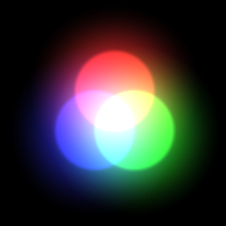
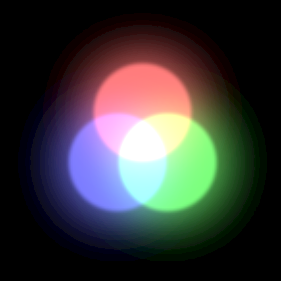

选项¶
概述¶
设置与编辑器的显示窗口有关的选项，例如网格设置和背景。
参数¶
网格颜色¶
设置网格的颜色。
网格可见性¶
设置是否显示网格。
X-Y网格可见性¶
设置是否显示XY平面上网格。
X-Z网格可见性¶
设置是否显示XZ平面上网格。
Y-Z网格可见性¶
设置是否显示YZ平面上网格。
网格尺寸¶
设置网格的尺寸。
输出放大¶
如果你打算在输出到“*.efk”文件时修改放大率，你可以用此参数来预览放大后的特效。
输出FPS¶
用于模拟在外部工具或游戏引擎中FPS不同的情况下播放的特效。
坐标系统¶
用于模拟在外部工具或游戏引擎中使用不同的坐标系统的情况下播放的特效。
色彩空间¶
用于模拟在外部工具或游戏引擎中使用不同的色彩空间的情况下播放的特效。
伽马空间¶

线性空间¶

最近的游戏引擎，如Unity，允许你改变色彩空间。请将其设置为与你所使用的外部游戏引擎的色彩空间一致。关于色彩空间本身的含义，请查看每个游戏引擎的使用说明。Effekseer的默认色彩空间是伽马空间。
鼠标映射¶
设置如何使用鼠标控制视点。 选项包括Effekseer、Maya、Unity和Blender。
鼠标旋转方向（X）¶
设置X方向移动鼠标进行旋转时，旋转的方向。
鼠标旋转方向（Y）¶
设置Y方向移动鼠标进行旋转时，旋转的方向。
鼠标平移方向（X）¶
设置X方向移动鼠标进行平移时，平移的方向。
鼠标平移方向（Y）¶
设置Y方向移动鼠标进行平移时，平移的方向。
字体¶
设置字体。
字体尺寸¶
设置字体的尺寸。
小数位数¶
控制浮点数小数点之后显示的位数。
自动保存间隔¶
设置正在编辑的项目的自动保存间隔。 参见恢复数据。